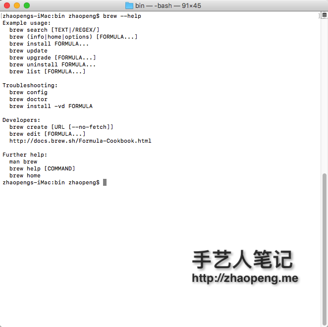

Homebrew 基本使用
帮助命令
brew -h

brew search * -搜索
brew install * -安装
brew uninstall * -卸载
brew list —列出已安装的软件
brew update —更新Homebrew
brew home *—用浏览器打开
brew info *—显示软件内容信息
brew deps * — 显示包依赖
brew -h brew —帮助
中科大 homebrew 镜像
cd /usr/local/
git remote set-url origin http://mirrors.ustc.edu.cn/homebrew.git
brew update
如果有问题，如下操作：
cd ~/tmp
git clone http://mirrors.ustc.edu.cn/homebrew.git
rm -rf /usr/local/.git
rm -rf /usr/local/Library
cp -R homebrew/.git /usr/local/
cp -R homebrew/Library /usr/local/
brew update
使用homebrew-science或者homebrew-python
cd /usr/local/Library/Taps/homebrew/homebrew-science
git remote set-url origin git://mirrors.tuna.tsinghua.edu.cn/homebrew-science.git
cd /usr/local/Library/Taps/homebrew/homebrew-python
git remote set-url origin git://mirrors.tuna.tsinghua.edu.cn/homebrew-python.git
brew update
安装 node-canvas (源代码安装)
1.pkg-config
$ curl http://pkgconfig.freedesktop.org/releases/pkg-config-0.28.tar.gz -o pkgconfig.tgz
$ tar -zxf pkgconfig.tgz && cd pkg-config-0.28
$ ./configure --with-internal-glib && make install
2.pixman
$ curl http://www.cairographics.org/releases/pixman-0.30.0.tar.gz -o pixman.tar.gz
$ tar -zxf pixman.tar.gz && cd pixman-0.30.0/
$ ./configure --prefix=/usr/local --disable-dependency-tracking
$ make install
3.libpng & export ...
$ brew install libpng
$ export PKG_CONFIG_PATH=/usr/local/lib/pkgconfig
$ export PKG_CONFIG_PATH=/usr/local/lib/pkgconfig:/opt/X11/lib/pkgconfig
4.node-canvas
$ npm install canvas
or from source:
$ node-gyp rebuild
5.如果出现错误
Error: error while reading from input stream
or:
Error: Image given has not completed loaded
安装如下库：
brew install giflib # for .gif files
brew install libjpeg # for .jpg files
再重新编译 node-canvas
安装开发常用的包
brew install wget watch tmux cmake openssl imagemagick graphicsmagick gearman geoip readline autoconf multitail source-highlight autojump zsh-completions sshfs
升级一下系统自带的vim
brew install ctags macvim --env-std --override-system-vim
#### Cakebrew
如果你不喜欢命令行方式来管理，那么 Cakebrew 是极好的选择。Cakebrew App 提供了可视化的界面来接管一部分 brew 命令，大多数操作都可以直接在界面上点几下来完成。